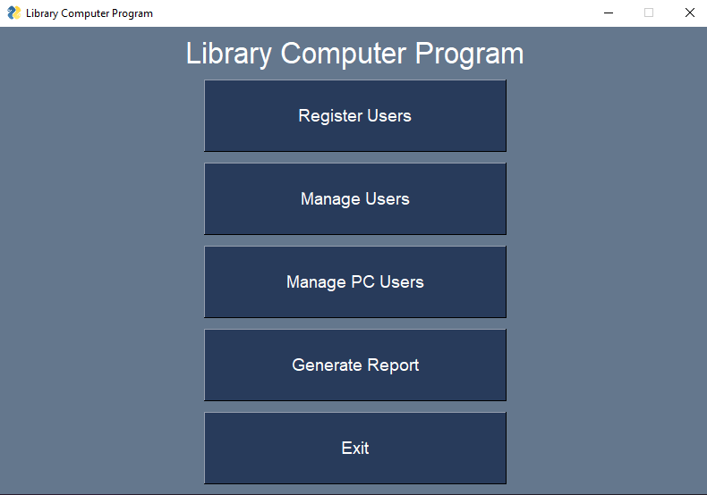
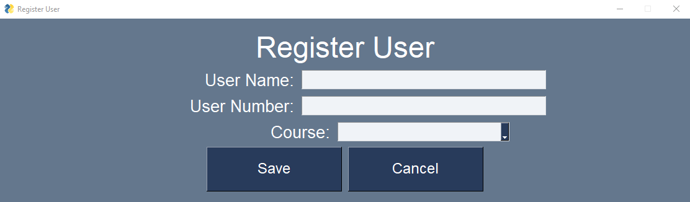
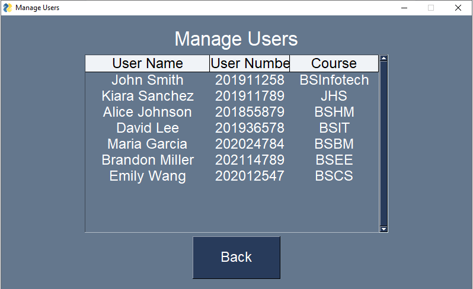
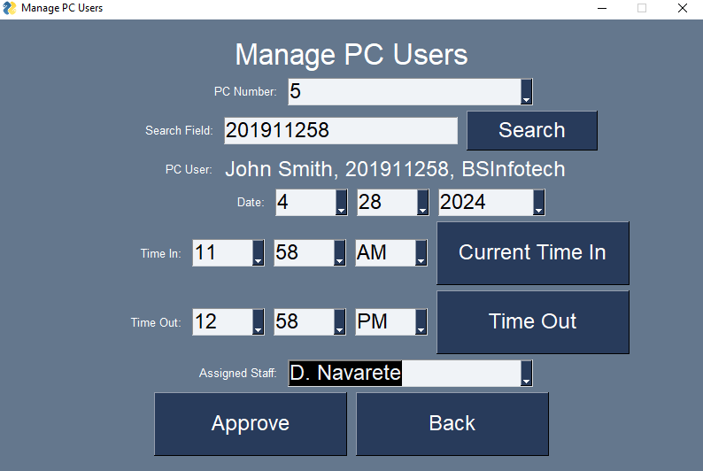
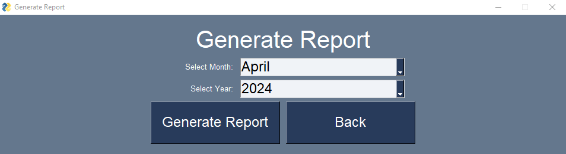

In an era where data drives decision-making across all industries, the education sector is no exception. Recognizing the importance of data-driven insights in optimizing resource allocation and enhancing student experiences, a Library Course-Based Computer Usage Monitoring System was conceived and developed. This innovative system, powered by Python and leveraging the capabilities of PySimpleGUI and pandas libraries, revolutionizes the way libraries monitor and analyze computer usage data. In this article, we explore the development journey of this transformative system and its potential to reshape the landscape of educational resource management.
At the heart of the Library Course-Based Computer Usage Monitoring System lies Python, a versatile and powerful programming language known for its simplicity and efficiency. Python's rich ecosystem of libraries makes it the ideal choice for developing data-driven applications, offering developers access to a wide range of tools and functionalities. Leveraging the PySimpleGUI library, the system boasts an intuitive and user-friendly interface, allowing library administrators to effortlessly monitor and analyze computer usage data with ease.
The integration of the pandas library further enhances the system's capabilities, enabling robust data manipulation and analysis. With pandas, the system can efficiently process and analyze large datasets, extracting valuable insights to inform decision-making. From tracking computer usage patterns to identifying high-demand resources, pandas empowers library administrators to optimize resource allocation and enhance the overall user experience.One of the key features of the Library Course-Based Computer Usage Monitoring System is its ability to export Excel reports, providing stakeholders with comprehensive insights into computer usage trends and patterns. This functionality enables library administrators to generate customized reports tailored to their specific needs, facilitating data-driven decision-making and strategic planning. Whether assessing the impact of new initiatives or identifying areas for improvement, the ability to export Excel reports empowers stakeholders to make informed decisions based on real-time data.
Central to the development process of the Library Course-Based Computer Usage Monitoring System was the seamless integration of Python libraries and the design of an intuitive user interface. Through iterative development and continuous feedback from stakeholders, the system evolved into a robust and user-friendly solution that meets the diverse needs of library administrators and staff. From the initial concept to the final implementation, every aspect of the system was meticulously crafted to deliver a seamless user experience and maximize usability.
As the Library Course-Based Computer Usage Monitoring System prepares for deployment, the potential impact it promises to deliver is immense. By leveraging the power of Python and data analytics, the system empowers libraries to make data-driven decisions that enhance resource allocation, improve user experiences, and drive overall efficiency. Whether optimizing computer lab configurations or identifying opportunities for service improvement, the insights provided by the system have the potential to transform the way libraries operate and serve their communities.
In conclusion, the development of the Library Course-Based Computer Usage Monitoring System represents a significant milestone in the intersection of technology and education. By harnessing the power of Python and data analytics, the system empowers libraries to harness the power of data and optimize resource allocation to meet the evolving needs of students and faculty. As the system prepares for deployment, the potential for innovation and impact in the field of educational resource management is boundless, and the Library Course-Based Computer Usage Monitoring System stands poised to lead the way.
BackCopyright © Aldren Bagual
Distributed By DrenGual